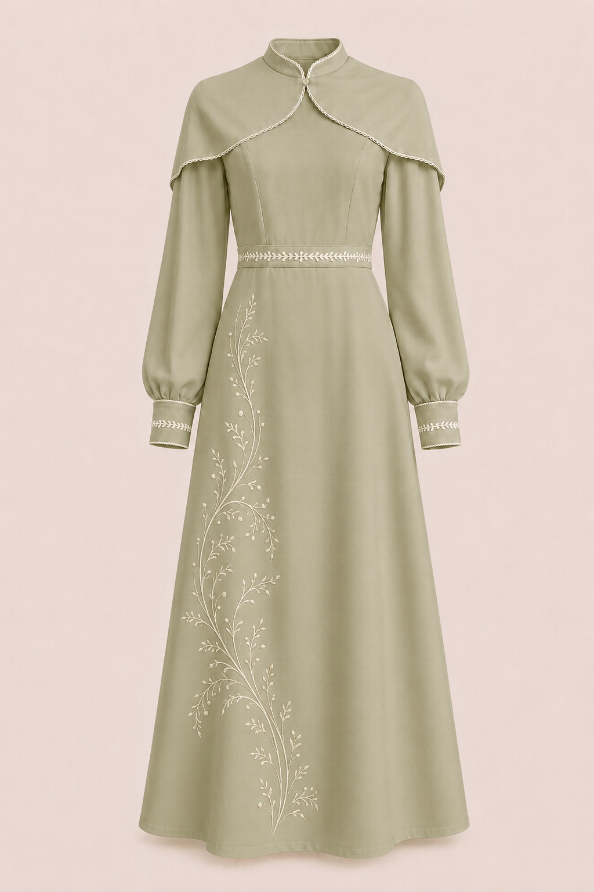

Ay Işığı Elbise
₺2.450
Ay Işığı Elbise, zarif çizgileri ve modern duruşuyla Lunisa'nın kadın koleksiyonunda yer alır.
Tasarım Hikâyesi
Bu tasarım, ay ışığının yumuşak zarafetinden ve geçmişten gelen kültürel motiflerin modern yorumundan ilham alınarak düşünülmüştür.
Ürün Özellikleri
- Modern ve zarif kesim
- Kültürel detaylardan ilham alan tasarım
- Özel günlerde ve günlük kullanımda tercih edilebilir